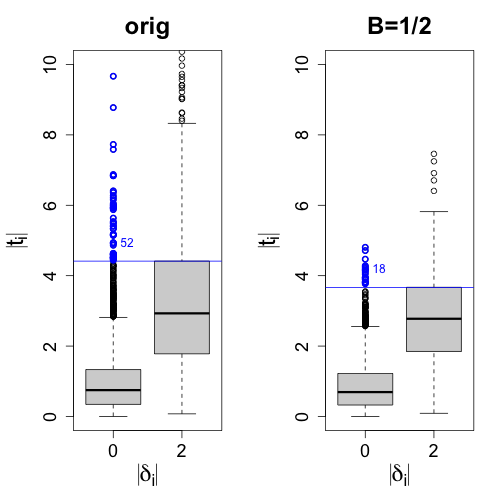
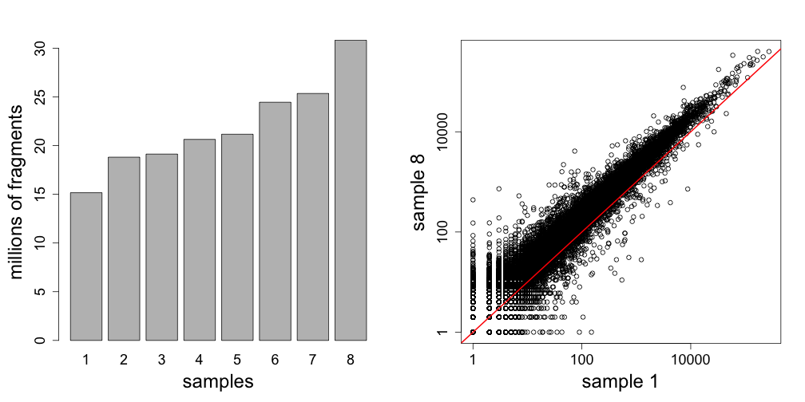
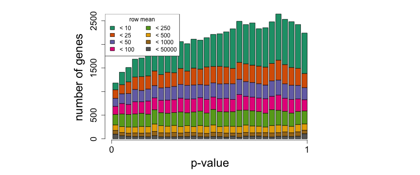
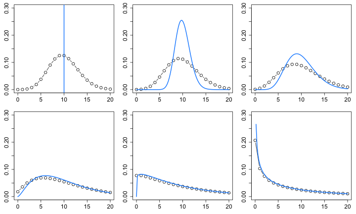
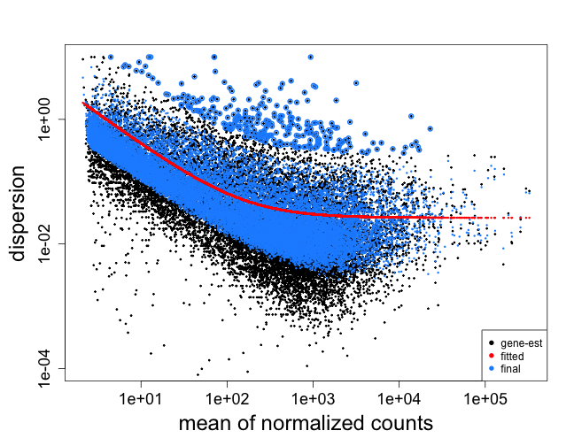
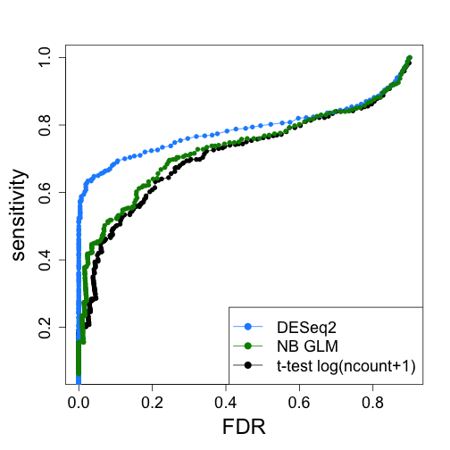

Hierarchical Models for RNA-seq
Michael Love
Dept of Biostatistics
Dept of Genetics
DNA => RNA


Why measure RNA as phenotype

Why measure RNA: tissue diversity

Why measure RNA: tissue diversity

Why measure RNA: within tissue over time

Why measure RNA: disease sub-types

Perou, et al. Molecular portraits of human breast tumours (2000)
Step back: pre-sequencing
Before sequencing was microarray

Step back: pre-sequencing
Signal was captured light (positive, "continuous")

Formalize
- Formalize as a simple statistical model
- Observed data \(X_{ij}\) as a R.V. following a distribution
- Distributional parameters of interest
Motivating problem
- Gene expression for i=1,...,N genes and j=1,...,M samples
- log of gene expression values are in a tall matrix X
- log here is convenient because gene expression is non-negative and has a long tail
- 2 equal sized groups of samples A and B
\[ \begin{aligned} X_{ij} &\sim N(\mu_{ij}, \sigma_i) \\ \mu_{ij} &= \mu_{i0}, \quad j \in A \\ \mu_{ij} &= \mu_{i0} + \delta_i, \quad j \in B \end{aligned} \]
\(\delta_i \ne 0\) implies DE (differential expression)
Note \(\sigma_i\)
This is critical: different genes i have different amount of variability.
\[ \begin{aligned} X_{ij} &\sim N(\mu_{ij}, \sigma_i) \\ \mu_{ij} &= \mu_{i0}, \quad j \in A \\ \mu_{ij} &= \mu_{i0} + \delta_i, \quad j \in B \end{aligned} \]
Goal of differential expression
- Find a set of genes for which \(\delta_i \ne 0\)
- We want to target a false discovery rate (FDR) cutoff
- For genes in our set G at FDR threshold z
\[ E \left( \sum\nolimits_{i \in G} 1_{ \{\delta_i = 0\} } \right) \le \left\vert G \right\vert z \]
Is this realistic?
- Can we accomplish this if all \(\delta_i \ne 0\)
- no, because methods often rely on global scaling normalization
- Are any \(\delta_i = 0\)?
- maybe not, but many are very small for controlled experiment
Is this realistic?
- What about \(\sigma_i\) for both groups?
- often this is enough, larger variance dominates
- not for single cell experiments
- More complex parametric models: baySeq
- Non-parametric: SAM / SAMseq
Back to the model
\[ \begin{aligned} X_{ij} &\sim N(\mu_{ij}, \sigma_i) \\ \mu_{ij} &= \mu_{i0}, \quad j \in A \\ \mu_{ij} &= \mu_{i0} + \delta_i, \quad j \in B \end{aligned} \]
- N = 5000, M = 6
- \(\delta_i = 0\) for 90%
- \(\delta_i = \pm2\) for 10%
- \(\sigma_i \sim \Gamma(10,10)\)
Distribution of \(\sigma_i\)

Try simple row t-tests

Just looking at ranks

Characterize the false positives
\[ \textrm{med}(t) \equiv \textrm{median}( \left| t_i \right| ) \, \textrm{for} \, i : \delta_i \ne 0 \]

Estimates of \(\sigma_i\)
\[ \textrm{med}(t) \equiv \textrm{median}( \left| t_i \right| ) \, \textrm{for} \, i : \delta_i \ne 0 \]

New estimator for \(\sigma_i\)
\[ \begin{aligned} \bar{\sigma} &= \frac{1}{N} \sum\nolimits_{i=1}^N \hat{\sigma}_i \\ \tilde{\sigma}_i^B &= B \bar{\sigma} + (1-B) \hat{\sigma}_i \end{aligned} \]

New estimator performance by rank

New estimators by |t|

Summary
- Top false positives were coming from genes with too low \(\hat{\sigma}_i\)
- Replace \(\hat{\sigma}_i\) with an estimate which is closer to \(\bar{\sigma}\)
- Depending on "close", new estimator dominates at all thresholds
How is this hierarchical?
Not your standard diagram, need to formalize

limma
- Smyth, G. K. (2004) Linear models and empirical Bayes methods for assessing differential expression in microarray experiments
- Developed the hierarchical model introduced by Lonnstedt and Speed (2002) for single sample into method for any experiment represented as linear model
\[ \frac{1}{\sigma^2_i} \sim \frac{1}{d_0 \sigma_0^2} \chi_{d0}^2 \]
Why inverse \(\chi^2\)?
- Conjugacy provides closed form solution
- Posterior mean for \(1/\sigma_i^2\) given \(\hat{\sigma}_i^2\) is \(1/\tilde{\sigma}_i^2\) with
\[ \tilde{\sigma}_i^2 = \frac{d_0 \hat{\sigma}_0^2 + d_i \hat{\sigma}_i^2}{d_0 + d_i} \]
And \(d_i\) as the standard residual degrees of freedom
Note that \(d_0\) controls B
\[ \begin{aligned} \tilde{\sigma}_i^2 &= \frac{d_0 \hat{\sigma}_0^2 + d_i \hat{\sigma}_i^2}{d_0 + d_i} \\ &= \left( \frac{d_0}{d_0 + d_i} \right) \hat{\sigma}_0^2 + \left( \frac{d_i}{d_0 + d_i} \right) \hat{\sigma}_i^2 \\ &= B \hat{\sigma}_0^2 + (1-B) \hat{\sigma}_i^2 \end{aligned} \]
Proper hierarchical model

Estimation of hyperparameters
- Need to estimate \(d_0, \hat{\sigma}_0^2\), which control strength and location of shrinkage or moderation
- \(d_0, \hat{\sigma}_0^2\) estimated via first two moments of \(\log \hat{\sigma}_i^2\)
- (Also need to estimate \(\upsilon_{0}\), another parameter giving variance of coefficients)
limma vs. naive estimators by rank

Operating characteristics (FP & FN)

Summary
- limma provides a hierarchical model for moderation of variance estimates in the context of linear models
- Avoids false positives from under-estimation of variance
- Also addresses the gain in degrees of freedom from moderation
RNA-seq: counting molecules

RNA-seq: counting molecules
@SRR1265495.1 1/1
CTTTGCCCGCGTGTCAGACTCCATCCCTCCTCTGCCGCCACCGCAGCAGCCACAGGCAGAGGAGGACGAGGACGACTGGGAATCGTAGGGGGCTCCATGAC
+
CCCFFFFFHGFHHHIJJIJIJJIJJJJJJJGIIJJJIJJJJJJJJEFHDEFFFEECDDDBDD?BB?B@BDDD@;9<BBBDBCB@A2<?BDDDBDBD@CDDC
@SRR1265495.2 2/1
CCTGGCTGTGTCCATGTCAGAGCAATGGCCCAAGTCTGGGTCTGGGGGGGAAGGTGTCATGGAGCCCCCTACGATTCCCAGTCGTCCTCGTCCTCCTCTGC
+
@C@FFFDFHHHHGGIIAGHI9GIIIIIGIIIIIGI@@FHGDDDH@GGIBB05?B>ACCCCCCCB<?BBCCBBBBCBCDC3>AC<BB<?CBBB?<@CCCA:@
@SRR1265495.3 3/1
CTGTGTCCATGTCAGAGCAATGGCCCAAGTCTGGGTCTGGGGGGGAAGGTGTCATGGAGCCCCCTACGATTCCCAGTCGTCCTCGTCCTCCTCTGCCTGTG
+
@C@DFFFFGGHDHIIEGDHCGGHIJGEHIIJIIJIEEHGIGEGDDB@@@CDDDDEDDDDDBDDDDDDDDDBCCDDCCDBBDDDDDB@?@DDDDCDDCC@4>
for ~30 million reads (often pairs of reads)
RNA-seq: counting molecules
Align to genome or transcriptome

RNA-seq: counting molecules
- Now for each gene and each sample we can obtain a count or estimated count of fragments
- Why estimated? Because some fragments cannot be uniquely associated with genes or isoforms
- Fast algorithms for probabilistically assignment:
- Assume we have integer counts \(K_{ij}\) of unique fragments or from rounding estimated counts
Counts
- Either model data with count distributions and inference with GLM
- Learn weights associated with log normalized counts and use limma
- limma-voom (2014)
Important for statistical analysis
- Total number of fragments is technical artifact
- Heteroskedasticity of counts
- Each gene has different variability
Total number of fragments

Sampling fragments
Poisson across technical replicates
- From Bullard 2010 take 7 technical replicates
- Calculate expected value \(\hat{\lambda}_{ij}\) using DESeq2 norm
- \(P(K_{ij} < \hat{\lambda}_{ij})\) assuming \(K_{ij} \sim \textrm{Pois}(\hat{\lambda}_{ij})\)

However, expression not equal across biological replicates
Negative Binomial / Gamma Poisson
\[ \begin{aligned} K_{ij} &\sim \textrm{NB}(\mu_{ij}, \alpha_i) \\ \textrm{Var}(K_{ij}) &= \mu_{ij} + \alpha_i \mu_{ij}^2 \end{aligned} \]

NB model for RNA-seq
- Similar to our microarray model for \(X_{ij}\)
- Added an \(s_j\) to deal with sequencing depth
\[ \begin{aligned} K_{ij} &\sim \textrm{NB}(\mu_{ij}, \alpha_i) \\ \mu_{ij} &= s_j q_{ij} \\ \log_2(q_{ij}) &= \beta_{i0}, \quad j \in A \\ \log_2(q_{ij}) &= \beta_{i0} + \delta_i, \quad j \in B \end{aligned} \]
\(\delta_i \ne 0\) implies DE (differential expression)
Moderation of dispersion
- In DESeq2, a prior on \(\log(\alpha_i)\)
- Calculate the mean of normalized counts \(\bar{\mu}_i\)
- A trend line of dispersion over mean \(\alpha_{tr}(\mu)\)
- Width of the prior \(\sigma^2\) estimated via assumption of normal sampling variance of \(\log(\hat{\alpha}_i)\)
\[ \log(\alpha_i) \sim N(\log(\alpha_{tr}(\bar{\mu}_i)), \sigma^2) \]
Moderation of dispersion

Moderation of dispersion

Evaluate via simulation

Summary
- Model for counts similar to the hierarchical linear model, but constructed for the dispersion parameter
- Final dispersion estimate plug-in value in DESeq2, edgeR
- edgeR quasi-likelihood takes into account dispersion estimation uncertainty
- limma-voom uses weights on log normalized counts
- apeglm uses Cauchy prior (heavy tails) on effect sizes